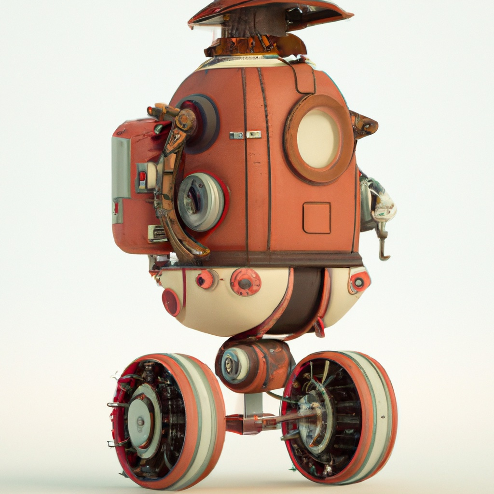

5.7. Chapter Summary#
{kind=link}
In the first four chapters of this book, we have considered motion and sensor models, but we haven’t really discussed the mechanics of motion or the implementation of sensors. Instead, we proposed abstract models (e.g., sensor models of the form \(z = h(x)\)) and various probability distributions to characterize uncertainty (e.g., conditional Gaussians), but we have not bothered to relate these models to the actual devices that effect motion and sensing. In this chapter, we began to remedy this deficiency, for motion models by studying the kinematics of differential drive robots, and for sensor models by studying cameras. We then developed appropriate planning, perception, and learning approaches for these models. For both modeling and reasoning, the methods we introduced in this chapter were quite different from what we have seen in previous chapters.
5.7.1. Models#
In previous chapters, our models have often been probabilistic in nature. Motion models have been expressed as conditional probability distributions that depend on current state and applied action, and sensor models have been expressed as conditional probability distributions that depend on state. In this chapter, we develop geometric models without consideration of uncertainty. In general, geometric models together with models for how uncertainty enters the system can be used to derive the kinds of conditional probability models we have seen in previous chapters.
We began the chapter with a formal definition of a configuration and of the configuration space for robotic systems. For the simple differential-drive robot of this chapter, we rigidly attach a coordinate frame to the robot, with origin at the midpoint of the axle and \(x\)-axis parallel to the direction of motion. The pose of this frame (position of its origin, and orientation of its axes) defines a configuration of the robot, and the set of all configurations, \({\cal Q} = \mathbb{R}^2 \times [0, 2\pi),\) defines the configuration space of the robot. We then showed how it is possible to determine the location of any point on the robot using the robot’s configuration.
The motion model for the differential-drive robot relates the angular velocities of the two actuated wheels to the linear and angular velocity of the body-attached coordinate frame. The forward velocity kinematics in the body-attached frame are given by
which can be expressed with respect to the world coordinate frame, as a function of the configuration of the robot, as
Using the differential kinematic equations, we can easily calculate either (a) the linear and angular velocity that will result from applied wheel angular velocities, or (b) the wheel angular velocities that are required to achieve the desired angular and linear velocities of the robot.
Cameras are sensors that compute a two-dimensional, discrete representation of a three-dimensional scene. In this chapter, we studied the geometry of the image formation process. There are essentially two aspects to image formation: projection and discretization. Points in the world are projected onto the image plane, which contains a discrete array of sensing elements, each of which corresponds to one pixel.
For most cameras, the imaging geometry can be modeled using perspective projection, which corresponds to a pinhole camera model. In such systems, the physical lens apparatus implements an effective pinhole, through which each light ray passes. The pinhole is located at the lens focal center, at distance \(F\) in front of the image plane. For a 3D point with coordinates \((X,Y,Z)\), the corresponding image plane coordinates are given by the perspective projection equations:
In the discretization stage, image plane coordinates are mapped to pixel coordinates by incorporating the pixel size and the location of the image center (also called the principal point), whose image coordinates are given as \((u_0, v_0)\). For the case of square pixels, such that there are \(k\) pixels per unit length, we combine pixel size with focal length into a single constant, \(f = Fk\), and obtain the projection equations for pixel coordinates \((r,c)\) as
These equations describe the forward imaging geometry, i.e., how points in the world project onto the imaging sensor. In robotics, we often need to solve the inverse problem: computing the 3D coordinates of a point in the world that corresponds to a certain pixel in the image. While this inverse problem cannot be solved using only the information in a single image, it is easily solved using a stereo pair of cameras, provided (a) the two cameras both view the relevant portion of the scene, (b) the geometric relationship between the two cameras is known. In the simplest stereo rig, the geometric relationship is restricted to a pure translation along the \(x\)-axis of the image frame. In this case, the \(Z\) coordinate of an image point can be computed using the fundamental stereo equation:
in which \(B\) is the distance between the origins of the two camera coordinate frames, and \(d\) is the disparity for the projected point in left and right images.
5.7.2. Reasoning#
In previous chapters, we have developed several methods to reason with uncertainty. We frequently relied on the concept of expectation to optimize with respect to average performance over long time horizons. In this chapter, we focused on the deterministic aspects of computer vision and robot motion. Rather than finding solutions that work well on average, we presented algorithms that consistently find good solutions, whether for problems related to scene understanding using computer vision or path planning for mobile robots. A motion planning system that only avoids collision on average is not acceptable in many applications. Likewise, computer vision systems that recognize objects well on average can fail spectacularly and catastrophically when used to guide robots operating in the real world, such as for self-driving cars (which we will see in Chapter 6).
Computer vision involves reasoning about images, and images are collections of pixels, therefore, the first computer vision algorithms that we described were simple image processing algorithms that operated on collections of pixels in an input image to produce and output image. Many of these image processing algorithms were merely variations on convolution (e.g., smoothing, edge detection) This motivated the introduction of convolutional neural networks (CNNs), and led naturally to the introduction of deep neural networks (or deep nets), which can be constructed using sequential layers of CNNs connected by activation layers. We then saw how deep nets can be used to solve classical computer vision problems such as semantic segmentation and depth estimation.
Our introduction of deep nets focused on their use as simple computational units. We provided the specific weights in the network that were required to implement specific, and known, operations. However, the real power of deep nets is that they can be used trained to implement operations that are not well understood, and that have not been successfully implemented using traditional computer algorithms. The secret to this power is that it is possible to learn the parameters of the network! In this chapter, we saw how to do this using supervised learning. With supervised learning, we are provided with a training set and a loss function. We train the network by choosing parameters that minimize this loss function with respect to the training set. While there are numerous candidate loss functions, we confined our attention to mean squared error and cross entropy loss functions. The usual way to train the network is to compute a gradient of the loss function with respect to the network’s parameters, and use some variation of gradient descent to find the optimal parameters. In cases for which the loss function includes additive terms for each element of the training data, the gradient computations can be extremely expensive, but we showed that we can reduce the required computation by computing the gradient only at randomly selected terms in the loss function, an approach known as stochastic gradient descent. It is worth noting that the method of randomization used in stochastic gradient descent is fundamentally different from our previous use of random variables to represent uncertain quantities. Until this point, we have used probability theory to characterize uncertainty in the robot’s understanding of the world, of its actions in the world, and of the data provided by its sensors. When using randomized algorithms, the stochastic behavior is a property of the algorithm, and not of the robot or its environment.
In previous chapters, we framed the planning problem in terms of maximizing an expected reward function. In this chapter, we looked at a more specific problem: planning a collision-free path for the robot from its initial configuration to a specified goal configuration. We began by showing how this problem could be solved by using a special case of value iteration (no stochastic component, negative reward for collision, high reward for reaching the goal), but it was immediately clear that this approach would not scale to more complex robotic systems, since the computational complexity of a dynamic programming approach scales exponentially with the dimension of the configuration space.
Even though value iteration doesn’t scale to higher dimensions, the idea of following the gradient of the reward function would be useful if there were a way to access this gradient without incurring the cost of computing the value function. Path planners that use artificial potential fields attempt to achieve this by constructing a function that behaves similarly to the value function, but that is specified in closed form for each configuration, thus eliminating the computational cost of dynamic programming. These algorithms work by evaluating the gradient of the potential function at the current configuration, and using gradient descent to make progress toward the goal, essentially focusing attention on computing the potential function along a single path to the goal, rather than computing a global representation of the value function. The problem with these methods is that the potential functions are almost never equivalent to the value function. In particular, the value function has a single optimum at the goal, while an artificial potential function typically has many local minima, which will trap gradient descent methods. Thus, with artificial potential field methods, we trade computational complexity for completeness, i.e., we lose the guarantee that a solution will be found when a solution exists, but we gain the possibility of finding solutions quickly.
In the same way that it was used to deal with the computational burden of computing gradients of complex loss functions, randomization has also been used to solve complex path planning problems. The basic idea is straightforward: generate random sample configurations, and then use fast and efficient motion planning algorithms to find local paths between these samples. In order for these methods to be effective, two conditions must hold: the random selection of configurations should ensure good coverage of the entire configuration space (as the number of samples increases), and the local path planning problems should be easy to solve (typically this is the case when the distance between two configurations is small).
Probabilistic road maps (PRMs) are graphs whose vertices correspond to sample configurations, and whose edges correspond to local paths between sample configurations. They are constructed by iteratively generating random samples and connecting each new sample to nearby samples that are already represented in the graph. This is an offline process, intended to build an approximate, global representation of the free configuration space. Equipped with a PRM, path planning is reduced to (a) finding a path from the initial configuration to some vertex in the graph, (b) finding a path from the goal configuration to a vertex in the graph, and (c) searching the graph for a path that connects these two vertices.
Rapidly-Exploring Random Trees (RRTs) are constructed by iteratively adding vertices to a tree whose root corresponds to the initial configuration, until a leaf is added that can be easily connected to the goal configuration. The trick that makes RRTs work is that the randomly generated samples are not themselves added to the tree; instead, they are used to determine which vertex in the existing tree should be expanded. Specifically, the vertex \(q_\mathrm{near}\) in the existing tree that is nearest to the randomly generated configuration \(q_\mathrm{rand}\) is selected for expansion, and the expansion is achieved by constructing a local path from \(q_\mathrm{near}\) in the direction of \(q_\mathrm{rand}\), terminating at the configuration \(q_\mathrm{new}\), which is added to the tree. If \(q_\mathrm{rand}\) is generated by sampling from a uniform distribution, the RRT will tend to explore the entire configuration space, ensuring (in an asymptotic, probabilistic sense) that a path will be found if one exists.
Finally, it is worth noting that, apart from value iteration, all of the planning methods introduced in this chapter can be considered as sampling-based algorithms for path planning. For the case of PRMs and RRTs, the samples are randomly generated, while for potential fields methods, we can consider each step in the gradient descent algorithm as a sample along the path currently under exploration. While the sampling strategies for these two approaches (random generation vs. gradient descent) are quite different, both share the property that paths are constructed by generating sample configurations and building a graph (a general graph for PRMs, a tree for RRTs, and a simple linear graph for potential fields). The resulting graphs essentially represent one-dimensional subsets of the configuration space, and the goal is to construct these sets so that their connectivity matches the connectivity of the free configuration space with respect to the problem at hand.
5.7.3. Background and History#
The kinematics of differential-drive robots are described in detail in the Introduction to Autonomous Mobile Robots book we mentioned earlier, by Siegwart et al. [2011]
The first mathematically rigorous book on robot motion planning was written by Latombe in the early nineties [Latombe, 1991]. Brian Eno once remarked that only about 1,000 people bought the first Velvet Underground album, but every one of them formed a rock ‘n’ roll band. Latombe’s book held this status in robotics; if you owned it, likely as not, you went on to become a researcher in robot motion planning. In subsequent years, Principles of Robot Motion by Choset et al. [2005] and Planning Algorithms by LaValle [2006] provided updated treatments of the rapidly expanding field.
Excellent introductions to the material on machine learning can be found in Deep Learning by Goodfellow et al. [2016] and Dive into Deep Learning by Zhang et al. [2023]. The historically important papers references in Section 5.4 are the Neocognitron paper by Fukushima [1980], and the LeNet paper by LeCun et al. [1998].
The seminal reference for transformer-based architectures is the famous “Attention is all you need” paper by Vaswani et al. [2017], and for vision-transformers the equivalent is the “An Image is Worth 16x16 Words” paper by Dosovitskiy et al. [2021]. A VIT architecture of note is the “Segment Anything” model by Kirillov et al. [2023]. Finally, a seminal reference for vision-language-action models is the RT-2 paper from Google [Brohan et al., 2023].